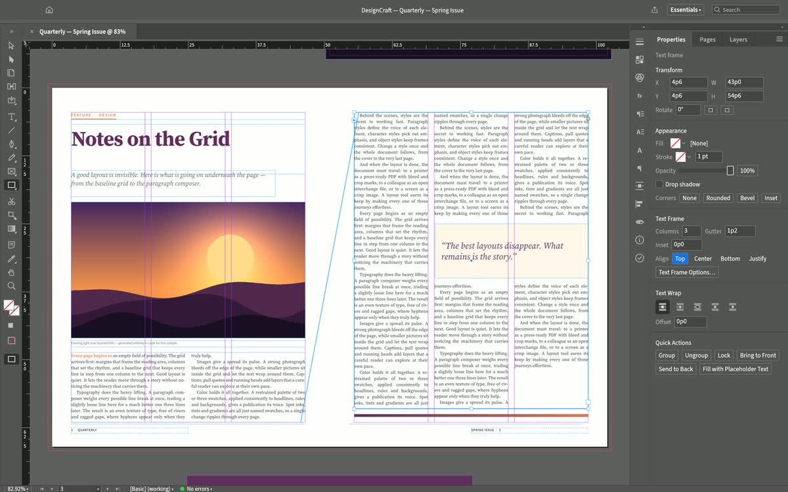

ISSUE 14 · EDITORIAL FEATURE
The Craft of Modern Digital Publishing

Edit any headline, pull-quote, caption or multi-column story directly on the facing spread. Toggle baseline grids and 3mm printer bleed marks above.
PRECISION TYPOGRAPHY. Facing-page layouts balance negative space, optical margins, running headers, and crisp serif body copy across columns without widows or orphans.
Click anywhere inside these columns to write your brochure, magazine feature, annual report, or product catalog, replace the photography with any high-resolution local image, and export straight to print-ready vector PDF.
“Great page design turns complex ideas into effortless reading.”
Switch column counts dynamically between single book layout, twin magazine columns, and three-column broadsheet style.
DESIGNCRAFT STUDIOFOLIO 02 — 03